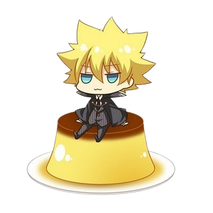
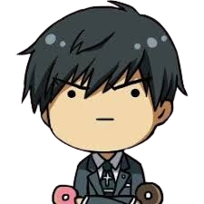
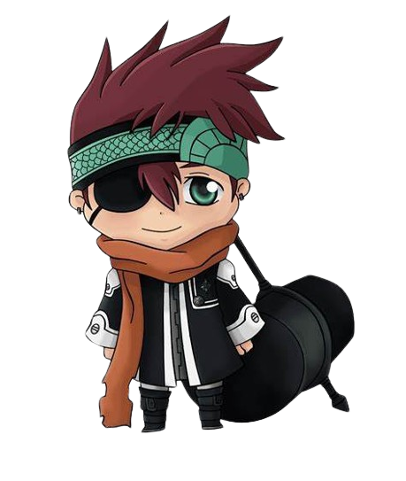
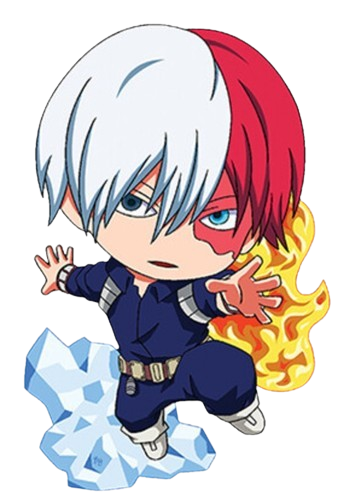

Kim Dokja
The Ugliest King
Kim Dokja is the main protagonist of Omniscient Reader's Viewpoint. He is the sole reader
of the webnovel Three Ways to Survive in a Ruined World, an apocalyptic fantasy story written by tls123
who read it through the end. He is often described as looking plain or unappealing by other characters,
so much so that he gains the Incarnation modifier "Ugliest King". It is later revealed that his
appearance is "censored" for those looking at him. In Dark Castle. Kim Dokja is fairly expressive and
has distinct mannerisms, though he may not realize it himself. He tilts his head slightly when worrying
about the kids. When he thinks about his mother, his eyes close and his eyelids twitch slightly. He
smiles mischievously and arches his eyebrows when he's teasing (generally towards Han Sooyoung).

Ieyasu Giotto Sawada
First Vonggola Boss
Giotto, later voluntarily renamed Ieyasu Sawada, is the founder and first boss of the
Vongola Famiglia, giving him the title of Vongola Primo. He is the progenitor of the Blood of Vongola,
and the direct ancestor of Iemitsu Sawada and Tsunayoshi Sawada. He is also the creator of the Zero
Point Breakthrough. Giotto's will and spirit currently resides in the Sky Vongola Ring, in the same way
as the souls of the other seven Vongola Bosses who have already passed away.

Koutaro Amon
A-OWL
Koutarou Amon (亜門 鋼太朗, Amon Kōtarō) is a former First Class Ghoul Investigator. He was
Kureo Mado's last partner and his last partner was Akira Mado. He was subsequently declared dead by the
CCG, though his body was never recovered, and was posthumously promoted to Special Class for his
distinguished service. Like most ghoul investigators, Amon usually wore a black suit with tie. If he
left for an investigation, he additionally wore a white overcoat on top of his suit. He also wears a
silver necklace with a cross. Years later, he wears a cloak with a hood, and an outfit with a high
collar underneath. He possesses a kakugan in his right eye. His right forearm and hand is made from a
kagune, the hand itself deformed with only three fingers and a blade-like extension growing alongside
the finger on the right side of his hand.

Lavi
successor of the Bookman Clan
There isn't anyone who doesn't feel regret or sadness.Lavi Lavi (ラビ , Rabi) is the current
alias of the current chosen successor of the Bookman Clan generally shortened as Bookman Junior. He is
one of the main characters of D.Gray-Man and an Exorcist and member of the European Branch of the Black
Order, though this affiliation only exists so he and his mentor, Bookman, can record the world history
as it unfolds. "Lavi" is his 49th alias, with "Deak" (ディック) being his previous one.

Shoto Todoroki
Half Hot Half Cold (Hero)
Shoto Todoroki, also known by the mononym Shoto, is a superhero and one of the main
protagonists of the manga series My Hero Academia, created by Kōhei Horikoshi. Being the only child who
inherited both Endeavor and Rei's Quirks, Shoto was often separated from his siblings.